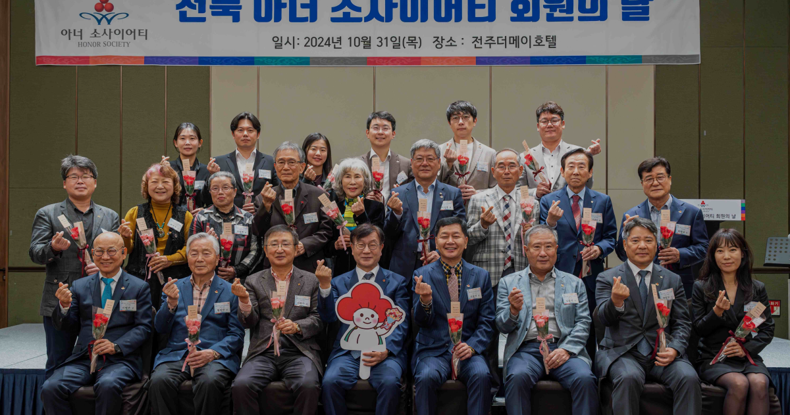
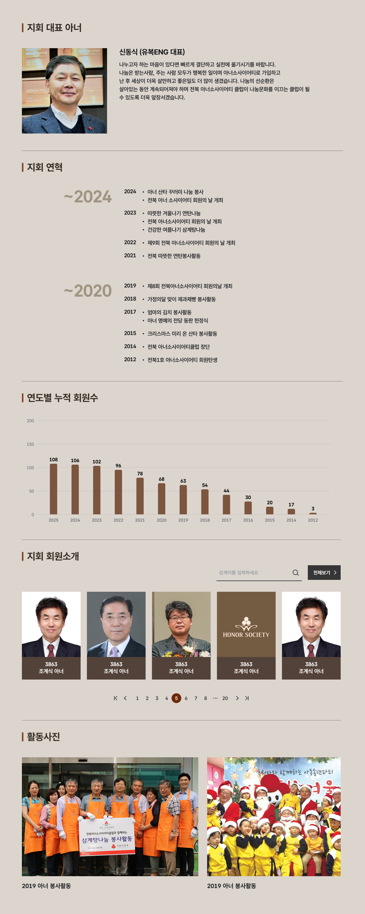

전북 아너 소사이어티 클럽은 노블레스 오블리주의 정신을 바탕으로 2014년 1월 창단하여
2024년 6월 107명의 회원으로 구성되어 있다. 중견, 대기업의 불모지라 불리는 전북특별자치도에서
개인 기부는 나눔문화로 활성화 되어 있으며 지속적인 봉사활동과 나눔활동을 하고 있다.
앞으로도 전북특별자치도의 진정한 나눔 문화를 이끄는 클럽이 될 수 있도록 혼신의 힘을 다해 노력할 것이다.
